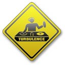
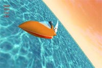

|
Nostalgia or "The hall of never completed projects":
I usually work on several projects in parallel and not always finish all of them... Here are some unfortunate examples:
 | Hold-Up 2.0 | n/a | A completely rewritten from the ground-up version of Hold-Up 100% Cocoa for MacOS X.
Of course, many new features are also planned.
System requirements: MacOS X 10.1 |
| iTalk | 2002-03-08 | A MacOS 9 program for high-quality voice-over-IP communication over the Internet (around 15Kb/s).
Development was stopped because testing showed that upload bandwidth was not stable enough on average cable or ADSL connections. This created unacceptable latencies.
Full C/C++ source code with CodeWarrior 7 project is available from the "Source Code" area of this web site.
This project should be easily portable to Carbon. |
| Oxyd Project | 1998-08-01 | A classic shoot-them-up game (vertical scrolling) in 32000 colors.
This project was abandonned because the artist who was working on it stopped.
You can find some parts of the source code of this project in the "Source Code" area. Although this code is really old, it might still interest you if you're building a 2D engine with custom blitters. |
|  | Turbulence Sound Studio 0.5 | 2001-03-20 | Turbulence Sound Studio was supposed to be the new AudioFusion while being at the same time the first semi-professional audio software on MacOS X.
Turbulence Sound Studio was built on a very powerful audio engine:
• unlimited number of channels: each channel may be a sequencer track or an audio source: audio CD, Microphone, audio data over a TCP/IP network, AIFF Direct To Disk, MP3 Direct To Disk...
• unlimited number of buses,
• up to 32 connections (channels, buses or FX send) per bus,
• unlimited number of FX per track or bus,
• supports audio FX (insert or send) and visual FX,
• internal sound engine in 32 bits floating point for higher precision improved dynamic and running at up to 96Khz (4 times better than CD quality) and above (internal sound engine sample rate unlimited),
• all conversions to / from internal sound engine done with floating-point linear interpolation,
• sample-precise sequencer,
• supports any even number of outputs,
• gain, volume and balance on each channel or bus,
• kernel can import 8 or 16 bits, mono or stereo, any sample rate sound data,
• kernel can export 8,16,32,64 integer or float at any sample rate,
• full automation,
• add/remove channels, buses, fx and edit them all in real-time,
• works with VM on or OFF,
• 100% powerpc code,
• optimized for G3,
• 100% carbonized: works under MacOS X,
• imports AIFF, AIFC, System 7, System 7 compressed, MP3...
• truly open plug-in architecture: audio fx, visual fx, timebase, file import, file export, sound generators, bridges...
• support bridge plugins to import plug-ins from other applications: SoundJam visual plug-ins, Steinberg VST fx, Steinberg ASIO (MacOS 8 & 9 only)...
• skins
The Audio Engine was 80% complete (the automation and sequencer were left to be implemented and about 50 plugs-ins were written) and I was starting the user interface when I lost the source code after a disk crash - I hadn't any backup of it or I lost it... |
|  | WindRacer | 1998-11-01 | WindRacer was intended to be a funboard (windracing) real-time 3D game.
This software was actually my first consequent 3D engine (based on former Apple's QuickDraw 3D Rave API).
WindRacer turned into WaterRace, an offshore racing game developed by 8 freelance people during 2 years. |
| X-News | n/a | A powerful news reporting tool. Contrary to other software that scan the web for the latest news but only display the news title and date, this one parses web pages and extracts the news content.
You can now read the news from your favorites web sites directly inside mail-like software. No more need for a web browser!
System requirements: MacOS X 10.1 |
|